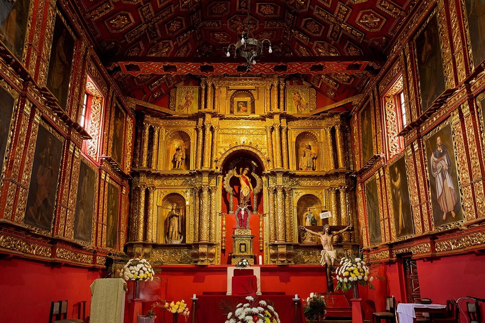

Retablo mayor
Retablo de madera tallada y dorada, de tres cuerpos y tres calles. Sus hornacinas y bajorrelieves representan escenas de la vida de Santo Domingo. La cronología documental registra que en 1616 Félix del Castillo costeó el retablo principal.
Importancia: es el centro visual del templo y reúne la talla y el dorado del arte colonial.
Fuente: Wikipedia y Corradine Angulo (ver La iglesia).Foto: Eber Roncancio, CC BY 4.0, Wikimedia Commons